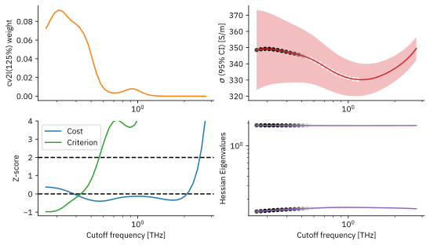
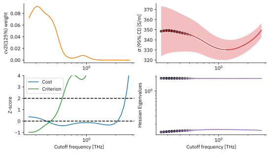

Ionic Electrical Conductivity of Molten Sodium Chloride at 1100 K (OpenMM)¶
Warning
This example notebook is work in progress. There are still some issues with the MD results obtained with OpenMM, which are discussed in the notebook.
This notebook shows how to post-process trajectories from OpenMM simulations
to calculate the ionic electrical conductivity.
The OpenMM trajectories are converted to NPZ files within the Jupyter Notebooks of the simulation,
making the approach here easily adaptable to other codes or physical systems.
All OpenMM simulation notebooks can be found in the directory docs/data/openmm_salt
in STACIE’s source repository.
The required theoretical background is explained the
Ionic Electrical Conductivity section.
The MD simulations are performed using the Born-Huggins-Mayer-Tosi-Fumi potential,
which is a popular choice for molten salts. [TF64]
This potential does not use mixing rules and it is not natively implemented in OpenMM,
but it can be incorporated using the CustomNonbondedForce and some creativity,
see docs/data/openmm_salt/bhmft.py in the Git repository.
The molten salt was simulated with a 3D periodic box of 1728 ions (864 Na\(^+\) and 864 Cl\(^-\)).
The time step in all simulations was 5 fs.
Following the Recommendations for MD Simulations, an initial block size of 10 steps (50 fs) was used. Because there is little prior knowledge on the structure of the spectrum, the exponential polynomial model (ExpPoly) with degrees \(S=\{0, 1\}\) was used initially, i.e. with \(P=2\) parameters. As explained in the section on block averages, \(400 P\) blocks were collected in the initial production runs, amounting to 8000 steps (40 ps) of simulation time.
In total 100 NVE production runs were performed. For each run, the system was first equilibrated in the NVT and later NPT ensemble. According to the section How to Prepare Sufficient Inputs for STACIE?, 100 runs should be sufficient to obtain a relative error on the ionic conductivity of about 1%:
where \(P\) is the number of parameters in the model and \(M = 100 \times 3\) is the number of independent input sequences. (100 trajectories, 3 Cartesian components of the charge current per trajectory)
Note
The results in this example were obtained using OpenMM 8.2.0. Minor differences may arise when using a different version of OpenMM, or even the same version compiled with a different compiler.
Library Imports and Configuration¶
import os
import numpy as np
import matplotlib.pyplot as plt
import matplotlib as mpl
from path import Path
import scipy.constants as sc
from scipy.stats import chi2
from stacie import (
ExpPolyModel,
PadeModel,
UnitConfig,
compute_spectrum,
estimate_acint,
plot_fitted_spectrum,
plot_extras,
)
from utils import plot_instantaneous_percentiles, plot_cumulative_temperature_histogram
mpl.rc_file("matplotlibrc")
%config InlineBackend.figure_formats = ["svg"]
# You normally do not need to change this path.
# It only needs to be overridden when building the documentation.
DATA_ROOT = Path(os.getenv("DATA_ROOT", "./")) / "openmm_salt/output/"
Analysis of the NpT Equilibration Runs¶
To validate that the equilibration runs have reached to proper temperature distribution, the following cell implements a plot of the percentiles (over the 100 trajectories) of a thermodynamic quantity (temperature or volume).
def plot_openmm_percentiles(
ensemble: str,
field: str,
unitstr: str,
unit: float = 1,
npart: int = 1,
ntraj: int = 100,
expected: None = None,
ymin: float | None = None,
ymax: float | None = None,
):
"""Plot the temperature of the NpT equilibration runs."""
time = None
natom = None
sequences = []
time = None
for itraj in range(ntraj):
row = []
if itraj == 0:
time = []
for ipart in range(npart):
path_npz = DATA_ROOT / f"sim{itraj:04d}_part{ipart:02d}_{ensemble}_traj.npz"
if not path_npz.exists():
print(f"File {path_npz} not found, skipping.")
row = None
break
data = np.load(path_npz)
natom = len(data["atnums"])
if itraj == 0:
time.append(data["time"])
row.append(data[field])
if row is None:
continue
if itraj == 0:
time = np.concatenate(time)
row = np.concatenate(row)
sequences.append(row)
sequences = np.array(sequences)
percents = np.array([95, 80, 50, 20, 5])
if field == "temperature":
temp_d = 1100
ndof = 3 * natom - 3
expected = chi2.ppf(percents / 100, ndof) * temp_d / ndof
ymin = chi2.ppf(0.01, ndof) * temp_d / ndof
ymax = chi2.ppf(0.99, ndof) * temp_d / ndof
else:
expected = None
time_unit = 1e-12
num = f"percentiles_{field}_{ensemble}"
plt.close(num)
_, ax = plt.subplots(num=num)
plot_instantaneous_percentiles(
ax,
time / time_unit,
sequences / unit,
percents,
None if expected is None else expected / unit,
ymin,
ymax,
)
ax.set_title(f"{field.title()} percentiles during the {ensemble.upper()} run")
ax.set_xlabel("Time [ps]")
ax.set_ylabel(f"{field.title()} [{unitstr}]")
The following cell plots the temperature percentiles for the NVT and NPT equilibration runs.
plot_openmm_percentiles("nvt", "temperature", "K")
plot_openmm_percentiles("npt", "temperature", "K")
The percentiles look good for the equilibration runs: they quickly reach their theoretical values (black dotted lines) and then fluctuate around them. The following cell plots the temperature percentiles for the initial NVE production runs.
plot_openmm_percentiles("nve", "temperature", "K")
This is clearly not the correct temperature distribution! There is a known problem with restart files in the NVE ensemble in OpenMM. Due to a bug, it tends to lower the temperature of the system. More details on this issue can be found here: https://github.com/openmm/openmm/issues/4948
The following cell plots the percentiles of the volume (over the 100 trajectories), which we can only use to validate that the volume distribution converges. However, we cannot trivially compare these percentiles to an expected distribution.
plot_openmm_percentiles("npt", "volume", "nm$^3$", unit=1e-27, expected="last")
This plot is not completely satisfactory either, as it suggests that the volume fluctuations of the 100 runs exhibit synchronized fluctuations, while they should be independent. (They use different random seeds for their MC Barostat.)
Reusable Code for the Analysis of the Production Runs¶
The analyze function takes a few parameters to apply the same analysis with STACIE
to different inputs (initial and extended production runs).
After the analysis, it generates screen output and figures
as discussed in the minimal example.
BOLTZMANN_CONSTANT = sc.value("Boltzmann constant") # J/K
def analyze(model, npart: int = 1, ntraj: int = 100) -> float:
"""Analyze MD trajectories to compute the ionic conductivity.
Parameters
----------
model
The model fitted to the spectrum.
npart
The number of parts in the simulation to load.
The default value of 1 corresponds to only loading the initial production runs.
Returns
-------
acint
The estimated ionic conductivity, mainly used for regression testing.
"""
# Get the time step from the first NPZ file.
time = np.load(DATA_ROOT / "sim0000_part00_nve_traj.npz")["time"]
timestep = time[1] - time[0]
def iter_sequences():
"""A generator that only loads one MD trajectory at a time in memory."""
for itraj in range(ntraj):
paths_npz = [
DATA_ROOT / f"sim{itraj:04d}_part{ipart:02d}_nve_traj.npz"
for ipart in range(npart)
]
if not all(path_npz.exists() for path_npz in paths_npz):
print(f"Some of {paths_npz} not found, skipping.")
continue
dipole = []
for path_npz in paths_npz:
data = np.load(path_npz)
dipole.append(data["dipole"])
dipole = np.concatenate(dipole, axis=1)
data = np.load(paths_npz[0])
prefactor = 1.0 / (
data["volume"][0] * data["temperature"].mean() * BOLTZMANN_CONSTANT
)
# The finite difference is equivalent to a block-averaged charge current.
current = np.diff(dipole, axis=1) / timestep
yield prefactor, current
# Configure units for output
uc = UnitConfig(
acint_symbol=r"\sigma",
acint_unit_str=r"S/m",
acint_fmt=".1f",
time_unit=1e-15,
time_unit_str="fs",
time_fmt=".3f",
freq_unit=1e12,
freq_unit_str="THz",
)
# Perform the analysis with STACIE
spectrum = compute_spectrum(
iter_sequences(),
timestep=timestep,
prefactors=None,
include_zero_freq=False,
)
result = estimate_acint(spectrum, model, verbose=True, uc=uc)
# Plot some basic analysis figures.
prefix = "conductivity"
plt.close(f"{prefix}_spectrum")
_, ax = plt.subplots(num=f"{prefix}_fitted")
plot_fitted_spectrum(ax, uc, result)
plt.close(f"{prefix}_extras")
_, axs = plt.subplots(2, 2, num=f"{prefix}_extras")
plot_extras(axs, uc, result)
# Return the ionic conductivity.
return result.acint
Analysis of the Initial Production Simulation¶
The following cell computes the ionic conductivity of the molten salt at 1100 K, from the initial production runs (8000 steps each).
conductivity_1_01 = analyze(ExpPolyModel([0, 1]))
CUTOFF FREQUENCY SCAN cv2l(125%)
neff criterion fcut [THz]
--------- ---------- ----------
10.0 -30.5 2.56e-01
10.7 -30.6 2.73e-01
11.4 -30.7 2.90e-01
12.2 -30.7 3.09e-01
13.0 -30.7 3.29e-01
13.8 -30.7 3.50e-01
14.8 -30.6 3.73e-01
15.8 -30.6 3.97e-01
16.8 -30.5 4.22e-01
17.9 -30.4 4.50e-01
19.1 -30.2 4.79e-01
20.4 -29.9 5.09e-01
21.7 -29.4 5.42e-01
23.2 -28.8 5.77e-01
24.7 -28.2 6.14e-01
26.3 -27.7 6.54e-01
28.0 -27.5 6.96e-01
29.9 -27.5 7.41e-01
31.8 -27.8 7.89e-01
33.9 -28.1 8.40e-01
36.1 -28.3 8.94e-01
38.5 -28.3 9.52e-01
41.0 -28.0 1.01e+00
43.7 -27.5 1.08e+00
46.5 -26.8 1.15e+00
49.6 -26.1 1.22e+00
52.8 -25.3 1.30e+00
56.2 -24.4 1.38e+00
59.9 -23.3 1.47e+00
63.8 -21.9 1.57e+00
67.9 -19.9 1.67e+00
72.4 -17.3 1.78e+00
77.1 -13.6 1.89e+00
82.1 -8.3 2.01e+00
87.4 -0.6 2.14e+00
93.1 10.8 2.28e+00
99.1 27.5 2.43e+00
105.5 52.4 2.59e+00
112.3 89.3 2.75e+00
Cutoff criterion exceeds incumbent + margin: -30.7 + 100.0.
INPUT TIME SERIES
Time step: 50.000 fs
Simulation time: 39950.000 fs
Maximum degrees of freedom: 600.0
MAIN RESULTS
Autocorrelation integral: 347.0 ± 10.9 S/m
Integrated correlation time: 25.116 ± 0.788 fs
SANITY CHECKS (weighted averages over cutoff grid)
Effective number of points: 15.6 (ideally > 40)
Regression cost Z-score: 0.1 (ideally < 2)
Cutoff criterion Z-score: -0.1 (ideally < 2)
MODEL exppoly(0, 1) | CUTOFF CRITERION cv2l(125%)
Number of parameters: 2
Average cutoff frequency: 3.94e-01 THz
/home/toon/univ/molmod/stacie/src/stacie/model.py:313: RuntimeWarning: overflow encountered in exp
amplitudes_model = np.exp(np.dot(design_matrix, pars))
 

The analysis of the initial production runs shows that the trajectories are not yet sufficient for a reliable interpretation of the autocorrelation integrals:
Only 15 effective points are used for the fitting.
The relative error is 3.1%, while higher than the coarse estimate of 0.9%, it is of the right order of magnitude.
The extra plots reveal another reason for extending the MD simulations. The cutoff weight is significant at the lowest cutoff frequency, suggesting that a finer grid with lower frequencies could reveal new details. Hence, we extended the production runs by 8000 additional steps to refine the frequency grid, of which the results are discussed in the following subsection.
Analysis of the Extended Production Simulation (8000 + 8000 steps)¶
We simply call the same analyze() function, but now with npart=2,
which loads the initial production runs and their first extension.
conductivity_2_01 = analyze(ExpPolyModel([0, 1]), npart=2)
CUTOFF FREQUENCY SCAN cv2l(125%)
neff criterion fcut [THz]
--------- ---------- ----------
10.0 -28.0 1.28e-01
10.7 -27.7 1.36e-01
11.4 -27.4 1.45e-01
12.2 -27.3 1.54e-01
13.0 -27.5 1.64e-01
13.8 -27.9 1.75e-01
14.8 -28.5 1.86e-01
15.8 -29.2 1.98e-01
16.8 -29.8 2.11e-01
17.9 -30.3 2.25e-01
19.1 -30.5 2.39e-01
20.4 -30.6 2.55e-01
21.7 -30.6 2.71e-01
23.2 -30.7 2.88e-01
24.7 -30.9 3.07e-01
26.3 -31.2 3.27e-01
28.0 -31.6 3.48e-01
29.9 -31.6 3.70e-01
31.8 -31.2 3.94e-01
33.9 -30.2 4.20e-01
36.1 -28.7 4.47e-01
38.5 -26.9 4.76e-01
41.0 -25.1 5.06e-01
43.7 -23.6 5.39e-01
46.5 -22.7 5.74e-01
49.6 -22.3 6.11e-01
52.8 -22.3 6.50e-01
56.2 -22.4 6.92e-01
59.9 -22.6 7.36e-01
63.8 -22.8 7.84e-01
67.9 -22.9 8.35e-01
72.4 -23.1 8.88e-01
77.1 -23.3 9.46e-01
82.1 -23.5 1.01e+00
87.4 -23.6 1.07e+00
93.1 -23.4 1.14e+00
99.1 -22.9 1.21e+00
105.5 -22.0 1.29e+00
112.3 -20.6 1.38e+00
119.6 -18.8 1.46e+00
127.4 -16.7 1.56e+00
135.6 -13.9 1.66e+00
144.4 -10.0 1.77e+00
153.7 -4.1 1.88e+00
163.7 5.1 2.00e+00
174.3 19.1 2.13e+00
185.6 40.9 2.27e+00
197.6 74.1 2.41e+00
Cutoff criterion exceeds incumbent + margin: -31.6 + 100.0.
INPUT TIME SERIES
Time step: 50.000 fs
Simulation time: 79950.000 fs
Maximum degrees of freedom: 600.0
MAIN RESULTS
Autocorrelation integral: 354.3 ± 8.0 S/m
Integrated correlation time: 25.671 ± 0.576 fs
SANITY CHECKS (weighted averages over cutoff grid)
Effective number of points: 25.7 (ideally > 40)
Regression cost Z-score: 0.6 (ideally < 2)
Cutoff criterion Z-score: -0.4 (ideally < 2)
MODEL exppoly(0, 1) | CUTOFF CRITERION cv2l(125%)
Number of parameters: 2
Average cutoff frequency: 3.19e-01 THz
The extended analysis shows that the results are starting to converge. However, the number of fitted points is still only 26, which is relatively low. To get more robust results, we extended the simulations once more. We added 184000 more steps, resulting in a simulation time of 1 ns for each of the 100 trajectories.
Analysis of the Extended Production Simulation (8000 + 8000 + 184000 steps)¶
We simply call the same analyze() function, but now with npart=3,
which loads the initial production runs and their first and second extensions.
conductivity_3_01 = analyze(ExpPolyModel([0, 1]), npart=3)
CUTOFF FREQUENCY SCAN cv2l(125%)
neff criterion fcut [THz]
--------- ---------- ----------
10.0 -27.0 1.02e-02
10.7 -27.1 1.09e-02
11.4 -27.3 1.16e-02
12.2 -27.4 1.23e-02
13.0 -27.5 1.31e-02
13.8 -27.6 1.40e-02
14.8 -27.8 1.49e-02
15.8 -27.9 1.58e-02
16.8 -28.0 1.69e-02
17.9 -28.0 1.80e-02
19.1 -28.0 1.91e-02
20.4 -28.1 2.04e-02
21.7 -28.2 2.17e-02
23.2 -28.4 2.31e-02
24.7 -28.5 2.45e-02
26.3 -28.6 2.61e-02
28.0 -28.7 2.78e-02
29.9 -28.8 2.96e-02
31.8 -28.9 3.15e-02
33.9 -29.0 3.36e-02
36.1 -29.2 3.57e-02
38.5 -29.3 3.80e-02
41.0 -29.5 4.05e-02
43.7 -29.6 4.31e-02
46.5 -29.6 4.59e-02
49.6 -29.7 4.88e-02
52.8 -29.7 5.20e-02
56.2 -29.8 5.53e-02
59.9 -29.9 5.89e-02
63.8 -30.1 6.27e-02
67.9 -30.3 6.67e-02
72.4 -30.4 7.10e-02
77.1 -30.5 7.56e-02
82.1 -30.7 8.05e-02
87.4 -30.8 8.57e-02
93.1 -30.9 9.12e-02
99.1 -31.1 9.71e-02
105.5 -31.2 1.03e-01
112.3 -31.4 1.10e-01
119.6 -31.5 1.17e-01
127.4 -31.6 1.25e-01
135.6 -31.7 1.33e-01
144.4 -31.9 1.41e-01
153.7 -32.0 1.50e-01
163.7 -32.2 1.60e-01
174.3 -32.4 1.70e-01
185.6 -32.5 1.81e-01
197.6 -32.6 1.93e-01
210.3 -32.7 2.06e-01
223.9 -32.6 2.19e-01
238.4 -32.2 2.33e-01
253.8 -31.6 2.48e-01
270.2 -30.7 2.64e-01
287.7 -29.4 2.81e-01
306.3 -27.9 2.99e-01
326.0 -26.4 3.18e-01
347.1 -25.0 3.39e-01
369.5 -23.7 3.61e-01
393.4 -22.5 3.84e-01
418.8 -21.3 4.09e-01
445.8 -20.0 4.35e-01
474.6 -18.5 4.63e-01
505.3 -16.8 4.93e-01
537.9 -15.1 5.25e-01
572.6 -13.5 5.59e-01
609.6 -12.2 5.95e-01
648.9 -11.3 6.33e-01
690.8 -11.0 6.74e-01
735.4 -11.0 7.17e-01
782.8 -11.2 7.64e-01
833.3 -11.5 8.13e-01
887.1 -11.7 8.65e-01
944.4 -11.6 9.21e-01
1005.3 -11.0 9.81e-01
Reached the maximum number of effective points (1000).
INPUT TIME SERIES
Time step: 50.000 fs
Simulation time: 999950.000 fs
Maximum degrees of freedom: 600.0
MAIN RESULTS
Autocorrelation integral: 352.9 ± 3.7 S/m
Integrated correlation time: 25.451 ± 0.264 fs
SANITY CHECKS (weighted averages over cutoff grid)
Effective number of points: 165.4 (ideally > 40)
Regression cost Z-score: 0.1 (ideally < 2)
Cutoff criterion Z-score: -0.3 (ideally < 2)
MODEL exppoly(0, 1) | CUTOFF CRITERION cv2l(125%)
Number of parameters: 2
Average cutoff frequency: 1.62e-01 THz
The analysis of the full extended production runs leads to a modest improvement. However, the utility of the first-order term of the model is questionable, given that the slope is nearly zero and could go either way according to the confidence intervals of the model (green dashed curves). Hence, we first test a constant (white noise) model to the first part of the spectrum:
conductivity_3_0 = analyze(ExpPolyModel([0]), npart=3)
CUTOFF FREQUENCY SCAN cv2l(125%)
neff criterion fcut [THz]
--------- ---------- ----------
5.0 -2.5 5.36e-03
5.4 -2.4 5.71e-03
5.7 -2.4 6.07e-03
6.1 -2.3 6.47e-03
6.6 -2.2 6.88e-03
7.0 -2.1 7.33e-03
7.5 -2.1 7.80e-03
8.0 -2.2 8.30e-03
8.6 -2.3 8.84e-03
9.1 -2.4 9.41e-03
9.8 -2.5 1.00e-02
10.4 -2.6 1.07e-02
11.1 -2.7 1.13e-02
11.9 -2.7 1.21e-02
12.7 -2.8 1.29e-02
13.5 -2.8 1.37e-02
14.4 -2.9 1.46e-02
15.4 -2.9 1.55e-02
16.4 -2.9 1.65e-02
17.5 -3.0 1.76e-02
18.7 -3.0 1.87e-02
19.9 -3.1 1.99e-02
21.2 -3.1 2.12e-02
22.6 -3.2 2.26e-02
24.1 -3.2 2.40e-02
25.7 -3.2 2.56e-02
27.4 -3.1 2.72e-02
29.2 -3.1 2.90e-02
31.1 -3.0 3.08e-02
33.2 -2.9 3.28e-02
35.4 -2.8 3.50e-02
37.7 -2.7 3.72e-02
40.1 -2.6 3.96e-02
42.7 -2.6 4.22e-02
45.5 -2.7 4.49e-02
48.5 -2.7 4.78e-02
51.7 -2.7 5.09e-02
55.0 -2.8 5.41e-02
58.6 -2.9 5.76e-02
62.4 -3.0 6.13e-02
66.5 -3.2 6.53e-02
70.8 -3.3 6.95e-02
75.4 -3.4 7.40e-02
80.3 -3.6 7.88e-02
85.5 -3.7 8.38e-02
91.1 -3.8 8.93e-02
97.0 -3.8 9.50e-02
103.2 -3.9 1.01e-01
109.9 -3.9 1.08e-01
117.1 -4.0 1.15e-01
124.6 -4.0 1.22e-01
132.7 -4.0 1.30e-01
141.3 -4.0 1.38e-01
150.4 -4.1 1.47e-01
160.2 -4.1 1.57e-01
170.5 -4.1 1.67e-01
181.6 -4.1 1.77e-01
193.3 -4.0 1.89e-01
205.8 -4.0 2.01e-01
219.1 -3.9 2.14e-01
233.3 -3.7 2.28e-01
248.4 -3.3 2.43e-01
264.4 -2.7 2.58e-01
281.5 -1.7 2.75e-01
299.7 0.0 2.93e-01
319.1 2.8 3.12e-01
339.7 7.0 3.32e-01
361.6 13.2 3.53e-01
385.0 22.0 3.76e-01
409.8 34.1 4.00e-01
436.3 50.2 4.26e-01
464.4 71.6 4.53e-01
494.4 99.8 4.82e-01
Cutoff criterion exceeds incumbent + margin: -4.1 + 100.0.
INPUT TIME SERIES
Time step: 50.000 fs
Simulation time: 999950.000 fs
Maximum degrees of freedom: 600.0
MAIN RESULTS
Autocorrelation integral: 353.4 ± 3.8 S/m
Integrated correlation time: 25.486 ± 0.271 fs
SANITY CHECKS (weighted averages over cutoff grid)
Effective number of points: 100.0 (ideally > 20)
Regression cost Z-score: 0.6 (ideally < 2)
Cutoff criterion Z-score: -0.4 (ideally < 2)
MODEL exppoly(0) | CUTOFF CRITERION cv2l(125%)
Number of parameters: 1
Average cutoff frequency: 9.80e-02 THz
Another model to consider is the Pade model, not because we expect the ACF to decay exponentially, but because it features well-behaved high-frequency limits, which can facilitate the regression.
conductivity_3_p = analyze(PadeModel([0, 2], [2]), npart=3)
CUTOFF FREQUENCY SCAN cv2l(125%)
neff criterion fcut [THz]
--------- ---------- ----------
15.0 inf 1.51e-02 (cv2l: Linear dependencies in basis. evals=array([1.63749975e-06, 1.02811096e-03, 2.99897025e+00]))
16.0 inf 1.61e-02 (cv2l: Linear dependencies in basis. evals=array([1.14118976e-06, 7.93346219e-04, 2.99920551e+00]))
17.1 inf 1.71e-02 (cv2l: Linear dependencies in basis. evals=array([7.86750561e-07, 6.14028456e-04, 2.99938518e+00]))
18.2 inf 1.82e-02 (cv2l: Linear dependencies in basis. evals=array([5.42867412e-07, 4.75275041e-04, 2.99952418e+00]))
19.4 inf 1.94e-02 (cv2l: Linear dependencies in basis. evals=array([3.76196721e-07, 3.69469427e-04, 2.99963015e+00]))
20.7 inf 2.06e-02 (cv2l: Linear dependencies in basis. evals=array([2.59666420e-07, 2.89088199e-04, 2.99971065e+00]))
22.0 inf 2.20e-02 (cv2l: Linear dependencies in basis. evals=array([1.80689157e-07, 2.27594112e-04, 2.99977223e+00]))
23.5 inf 2.34e-02 (opt: Hessian matrix has non-positive eigenvalues: evals=array([-2.74279924e-05, 4.30590654e-01, 2.56943677e+00]))
25.0 -89.1 2.49e-02
26.7 -89.7 2.65e-02
28.4 -90.2 2.82e-02
30.3 -90.3 3.00e-02
32.3 -90.0 3.20e-02
34.4 -89.9 3.40e-02
36.7 -89.8 3.62e-02
39.1 -89.7 3.86e-02
41.6 -89.4 4.11e-02
44.3 -89.2 4.37e-02
47.2 -89.0 4.65e-02
50.3 -88.7 4.95e-02
53.6 -88.4 5.27e-02
57.1 -88.0 5.61e-02
60.8 -87.6 5.97e-02
64.7 -87.1 6.36e-02
68.9 -86.7 6.77e-02
73.4 -86.3 7.21e-02
78.2 -85.9 7.67e-02
83.3 -85.5 8.17e-02
88.7 -85.1 8.69e-02
94.4 -84.7 9.25e-02
100.5 -84.2 9.85e-02
107.1 -83.7 1.05e-01
114.0 -83.3 1.12e-01
121.4 -82.9 1.19e-01
129.2 -82.5 1.26e-01
137.6 -82.1 1.35e-01
146.5 -81.6 1.43e-01
156.0 inf 1.53e-01 (opt: Hessian matrix has non-positive eigenvalues: evals=array([-1.54359370e-06, 4.41366618e-01, 2.55863493e+00]))
166.1 inf 1.62e-01 (opt: Hessian matrix has non-positive eigenvalues: evals=array([-1.49142797e-06, 4.41582231e-01, 2.55841926e+00]))
176.8 inf 1.73e-01 (opt: Hessian matrix has non-positive eigenvalues: evals=array([-2.91330612e-06, 4.41639799e-01, 2.55836311e+00]))
188.3 inf 1.84e-01 (opt: Hessian matrix has non-positive eigenvalues: evals=array([-8.02534064e-06, 4.41998992e-01, 2.55800903e+00]))
200.4 inf 1.96e-01 (opt: Hessian matrix has non-positive eigenvalues: evals=array([-1.49369521e-05, 4.42334093e-01, 2.55768084e+00]))
213.4 inf 2.09e-01 (opt: Hessian matrix has non-positive eigenvalues: evals=array([-2.27159654e-05, 4.42747757e-01, 2.55727496e+00]))
227.2 inf 2.22e-01 (opt: Hessian matrix has non-positive eigenvalues: evals=array([-2.87488075e-05, 4.43190437e-01, 2.55683831e+00]))
241.9 inf 2.36e-01 (opt: Hessian matrix has non-positive eigenvalues: evals=array([-4.04863273e-05, 4.43778776e-01, 2.55626171e+00]))
257.5 inf 2.52e-01 (opt: Hessian matrix has non-positive eigenvalues: evals=array([-4.33777791e-05, 4.44331986e-01, 2.55571139e+00]))
274.2 inf 2.68e-01 (opt: Hessian matrix has non-positive eigenvalues: evals=array([-4.06989167e-05, 4.44918800e-01, 2.55512190e+00]))
291.9 inf 2.85e-01 (opt: Hessian matrix has non-positive eigenvalues: evals=array([-2.40531661e-05, 4.45570259e-01, 2.55445379e+00]))
310.7 -102.2 3.03e-01
330.8 -102.7 3.23e-01
352.2 -103.3 3.44e-01
374.9 -103.9 3.66e-01
399.1 -104.4 3.90e-01
424.9 -104.9 4.15e-01
452.3 -105.3 4.41e-01
481.5 -105.7 4.70e-01
512.6 -105.8 5.00e-01
545.7 -105.9 5.32e-01
580.9 -105.9 5.67e-01
618.4 -105.8 6.03e-01
658.4 -105.9 6.42e-01
700.9 -106.2 6.84e-01
746.1 -106.8 7.28e-01
794.2 -107.5 7.75e-01
845.5 -108.0 8.25e-01
900.1 -108.2 8.78e-01
958.1 -107.9 9.35e-01
1020.0 -107.4 9.95e-01
Reached the maximum number of effective points (1000).
INPUT TIME SERIES
Time step: 50.000 fs
Simulation time: 999950.000 fs
Maximum degrees of freedom: 600.0
MAIN RESULTS
Autocorrelation integral: 349.9 ± 1.3 S/m
Integrated correlation time: 25.232 ± 0.091 fs
SANITY CHECKS (weighted averages over cutoff grid)
Effective number of points: 829.1 (ideally > 60)
Regression cost Z-score: -0.5 (ideally < 2)
Cutoff criterion Z-score: -0.1 (ideally < 2)
MODEL pade(0, 2; 2) | CUTOFF CRITERION cv2l(125%)
Number of parameters: 3
Average cutoff frequency: 8.09e-01 THz

This is indeed a successful regression, with 829 effective points for a three-parameter model. The relative error estimate on the final result is 0.37%.
Density¶
To enable a proper comparison with the experimental and other simulation results, we also need to estimate the density of the system. This is done by averaging the density over the NpT trajectories from the production runs.
def estimate_density(ntraj: int = 100):
densities = []
molar_vols = []
masses = {11: 22.990, 17: 35.45} # g/mol
avogadro = 6.02214076e23 # 1/mol
for itraj in range(ntraj):
path_npz = DATA_ROOT / f"sim{itraj:04d}_part00_npt_traj.npz"
if not path_npz.exists():
print(f"File {path_npz} not found, skipping.")
continue
data = np.load(path_npz)
mass = sum(masses[atnum] for atnum in data["atnums"]) / avogadro
volume = data["volume"] * 10**6 # from m³ to cm³
densities.append(mass / volume)
molar_vols.append(2 * avogadro * volume / len(data["atnums"]) / 2)
density = np.mean(densities)
print(f"Mass density: {density:.3f} ± {np.std(densities):.3f} g/cm³")
print(f"Molar volume: {np.mean(molar_vols):.4f} ± {np.std(molar_vols):.4f} cm³/mol")
return density
density = estimate_density()
Mass density: 1.454 ± 0.014 g/cm³
Molar volume: 20.1042 ± 0.1977 cm³/mol
Comparison to Literature Results¶
Transport properties for this system are challenging to compute accurately. Consequently, simulation results from the literature may exhibit some variation. While the results should be broadly comparable to some extent, deviations may arise due to the differences in post-processing techniques, and the absence of reported error bars in some studies. Furthermore, in [WSLY14] smaller simulation cells were used (512 ions instead of 1728), which may also contribute to discrepancies.
In the table below, we included some more results obtained with STACIE than those discussed above. We also computed the conductivity with the Pade model for all cases, which was a better choice in retrospect.
Ensemble |
Simulated time [ns] |
Density [g/cm3] |
Conductivity [S/m] |
Reference |
|---|---|---|---|---|
NpT+NVE |
4 |
1.454 ± 0.014 |
347 ± 10.9 |
init expoly(0,1) |
NpT+NVE |
8 |
1.454 ± 0.014 |
354 ± 8.0 |
ext1 expoly(0,1) |
NpT+NVE |
100 |
1.454 ± 0.014 |
353 ± 3.7 |
ext2 expoly(0,1) |
NpT+NVE |
100 |
1.454 ± 0.014 |
353 ± 3.8 |
ext2 expoly(0) |
NpT+NVE |
4 |
1.454 ± 0.014 |
343 ± 5.4 |
init pade(0, 2; 2) |
NpT+NVE |
8 |
1.454 ± 0.014 |
346 ± 3.7 |
ext1 pade(0, 2; 2) |
NpT+NVE |
100 |
1.454 ± 0.014 |
349 ± 1.3 |
ext2 pade(0, 2; 2) |
NpT+NVT |
6 |
1.456 |
348 ± 7 |
[WDZ+20] |
NpT+NVT |
> 5 |
1.444 |
≈ 310 |
[WSLY14] |
Experiment |
N.A. |
1.542 ± 0.006 |
366 ± 3 |
The comparison shows that the results obtained with STACIE align reasonably well with the literature. In terms of statistical efficiency, STACIE achieves comparable or smaller error bars for about the same simulation time. The deviation from experiment is attributed to the approximations in the NaCl potential. [WDZ+20]
Finally, this example also shows why transport properties can be difficult to compute. As more data is collected, a more detailed spectrum is obtained. Simple models can struggle to explain the increasing amount of information. When extending the total simulation time from 8 ns to 100 ns, the effective number of points in the fit does not grow accordingly. As a result, the uncertainties decrease rather slowly with increasing simulation time.
Technical Details of the Analysis of the Literature Data¶
References for the experimental data:
The following cell converts a molar ionic conductivity from the literature back to a conductivity.
def convert_molar_conductivity():
"""Convert a specific conductance to a conductivity."""
# Parameters taken from Wang 2020 (https://doi.org/10.1063/5.0023225)
# and immediately converted to SI units
molar_conductivity = 140 * 1e-4 # S m²/mol
molar_conductivity_std = 3 * 1e-4 # S m²/mol
density = 1.456 * 1e3 # kg/m³
molar_mass = (22.990 + 35.45) * 1e-3 # kg/mol
molar_volume = molar_mass / density # m³/mol
conductivity = molar_conductivity / molar_volume
conductivity_std = molar_conductivity_std / molar_volume
print("Conductivity [S/m]", conductivity)
print("Conductivity std [S/m]", conductivity_std)
convert_molar_conductivity()
Conductivity [S/m] 348.8021902806297
Conductivity std [S/m] 7.474332648870638
Validation of the Production Runs¶
To further establish that our NVE runs together represent the NpT ensemble, the following two cells perform additional validation checks.
A plot of the conserved quantity of the separate NVE runs, to detect any drift.
The distribution of the instantaneous temperature, which should match the desired NpT distribution. For each individual NVE run and for the combined NVE runs, cumulative distributions are plotted. The function also plots the expected cumulative distribution of the NpT ensemble.
def plot_total_energy(npart: int = 3, ntraj: int = 100):
time = None
energies = []
for itraj in range(ntraj):
if itraj == 0:
time = []
energies_traj = []
for ipart in range(npart):
path_npz = DATA_ROOT / f"sim{itraj:04d}_part{ipart:02d}_nve_traj.npz"
if not path_npz.exists():
print(f"File {path_npz} not found, skipping.")
continue
data = np.load(path_npz)
if itraj == 0:
time.append(data["time"])
energies_traj.append(data["total_energy"])
if itraj == 0:
time = np.concatenate(time)
energies.append(np.concatenate(energies_traj))
num = "total_energy"
plt.close(num)
_, ax = plt.subplots(num=num)
for energies_traj in energies:
plt.plot(time, energies_traj)
plt.title("Total energy of the NVE production runs")
plt.xlabel("Time [ps]")
plt.ylabel("Total energy [kJ/mol]")
plot_total_energy()

There is no noticeable drift in the total energy of the NVE runs. Apart from the usual (and acceptable) numerical noise, the total energy is conserved perfectly.
def plot_temperature_production(npart: int = 3, ntraj: int = 100):
"""Plot cumulative distributions of the instantaneous temperature."""
# Load the temperature data from the NVE production runs.
natom = None
temps = []
for itraj in range(ntraj):
temps.append([])
for ipart in range(npart):
path_npz = DATA_ROOT / f"sim{itraj:04d}_part{ipart:02d}_nve_traj.npz"
if not path_npz.exists():
print(f"File {path_npz} not found, skipping.")
continue
data = np.load(path_npz)
natom = len(data["atnums"])
temps[-1].append(data["temperature"])
temps = np.array([np.concatenate(t) for t in temps])
# Plot the instantaneous and desired temperature distribution.
plt.close("tempprod")
_, ax = plt.subplots(num="tempprod")
ndof = 3 * natom - 3
temp_d = 1100
plot_cumulative_temperature_histogram(ax, temps, temp_d, ndof, "K")
plot_temperature_production()
Alas, as mentioned above, there is still a small mismatch between the obtained and expected NVT temperature distributions. This notebook will be updated after OpenMM issue #4948 has been resolved.
Regression Tests¶
If you are experimenting with this notebook, you can ignore any exceptions below. The tests are only meant to pass for the notebook in its original form.
if abs(conductivity_1_01 - 347) > 10:
raise ValueError(f"wrong conductivity (production): {conductivity_1_01:.0f}")
if abs(conductivity_2_01 - 354) > 8:
raise ValueError(f"wrong conductivity (production): {conductivity_2_01:.0f}")
if abs(conductivity_3_01 - 353) > 7:
raise ValueError(f"wrong conductivity (production): {conductivity_3_01:.0f}")
if abs(conductivity_3_0 - 353) > 5:
raise ValueError(f"wrong conductivity (production): {conductivity_3_0:.0f}")
if abs(conductivity_3_p - 349) > 3:
raise ValueError(f"wrong conductivity (production): {conductivity_3_p:.0f}")
if abs(density - 1.449) > 0.02:
raise ValueError(f"wrong density (production): {density:.3f}")